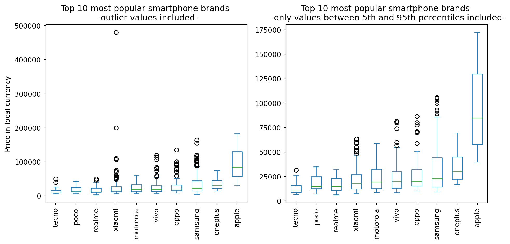
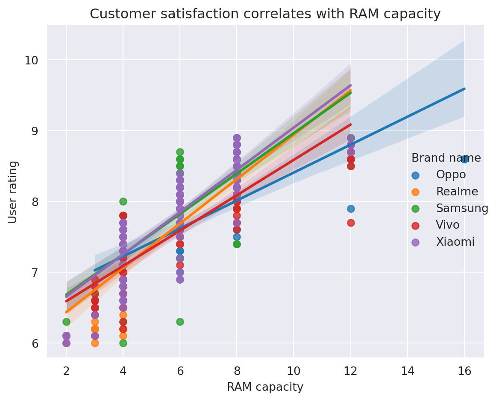

Code
import pandas as pd
import numpy as np
import matplotlib.pyplot as plt
import seaborn as sns
pd.set_option('display.max_columns', None)Adam Cseresznye
August 2, 2023
Effective Pandas by Matt Harrison is a guide to the Pandas library, a powerful Python tool for data manipulation and analysis. The book covers a wide range of topics, from basic data structures to advanced techniques for data cleaning, transformation, and visualization.
I have found Effective Pandas to be a captivating and thought-provoking read. The book offers a genuinely unique take on data wrangling, putting a great emphasis on the utility of chaining methods and utilizing the lambda function. I have found these ideas to be so useful and practical that I have revisited the book multiple times just to make sure I keep them fresh in my memory. I must have read the book from back to back at least 3-4 times.
In this article, I will share the top 10 (+1) things I learned from Effective Pandas. These are the concepts and techniques that I found to be the most useful and practical.
We will use the Real World Smartphone’s Dataset by Abhijit Dahatonde from Kaggle. Let’s get to it.
<class 'pandas.core.frame.DataFrame'>
RangeIndex: 980 entries, 0 to 979
Data columns (total 22 columns):
# Column Non-Null Count Dtype
--- ------ -------------- -----
0 brand_name 980 non-null object
1 model 980 non-null object
2 price 980 non-null int64
3 avg_rating 879 non-null float64
4 5G_or_not 980 non-null int64
5 processor_brand 960 non-null object
6 num_cores 974 non-null float64
7 processor_speed 938 non-null float64
8 battery_capacity 969 non-null float64
9 fast_charging_available 980 non-null int64
10 fast_charging 769 non-null float64
11 ram_capacity 980 non-null int64
12 internal_memory 980 non-null int64
13 screen_size 980 non-null float64
14 refresh_rate 980 non-null int64
15 num_rear_cameras 980 non-null int64
16 os 966 non-null object
17 primary_camera_rear 980 non-null float64
18 primary_camera_front 975 non-null float64
19 extended_memory_available 980 non-null int64
20 resolution_height 980 non-null int64
21 resolution_width 980 non-null int64
dtypes: float64(8), int64(10), object(4)
memory usage: 168.6+ KBpd.assign more extensivelyThe pd.assign method in Pandas is a very powerful tool that can be used to create new columns, modify existing columns, or both. It is a very versatile method that can be used in a variety of ways.
One of the most important benefits of using the assign method is that it can be incorporated into method chaining. This means that you can chain multiple assign methods together to create a more concise and readable code. Another benefit of using the assign method is that it completely sidesteps the infamous SettingWithCopyWarning. This warning is often triggered when you try to modify an existing column in a DataFrame. However, the assign method creates a new DataFrame, so there is no need to worry about this warning.
Problem statement: Let’s say we would like to capitalize the brand names located in the brand_name column as well as calculate the Pixels Per Inch (PPI). PPI can be calculated following the equation described by the Pixel density page on Wikipedia.
(df
.assign(brand_name=lambda df: df.brand_name.str.capitalize(), # capitalizes the brand names
PPI=lambda df: (np.sqrt(np.square(df.resolution_height) + np.square(df.resolution_width))
.div(df.screen_size)
.round(1)
)
)
.loc[:, ['brand_name','model','PPI']]
.sort_values(by='PPI',ascending=False)
.head(5)
)| brand_name | model | PPI | |
|---|---|---|---|
| 689 | Sony | Sony Xperia 1 IV (12GB RAM + 512GB) | 642.6 |
| 696 | Sony | Sony Xperia Pro-I | 642.6 |
| 688 | Sony | Sony Xperia 1 II | 642.6 |
| 655 | Samsung | Samsung Galaxy S20 | 566.0 |
| 656 | Samsung | Samsung Galaxy S20 5G | 566.0 |
np.selectIf our goal is to incorporate if-else logic seamlessly into our code, we can effortlessly achieve this using either pd.mask or pd.where. Yet, what approach should we adopt when we need to evaluate multiple conditions instead of just two? In such situations, we have two options: we can either employ successive pd.mask or pd.where calls, or we can take advantage of the np.select function as an alternative solution.
Problem statement: We want to identify the top 3 and top 5 most popular processor brands in smartphones. To do this, we will first create two lists, one for the top 3 brands and one for the top 5 brands. Any processor brand that is not in either of these lists will be categorized as “Other”.
Top 3 most popular processors: ['snapdragon', 'helio', 'dimensity']
Top 5 most popular processors: ['snapdragon', 'helio', 'dimensity', 'exynos', 'bionic']'''
Here's an example that employs two successive pd.where calls:
In the first pd.where call, it checks whether the brand is in the top 3; if not, it assigns the label "Top5" to it.
Then, in the second call, it checks if the value is in the top 5; if not, it appends the category "Other".
As you can see, the logic can become intricate and difficult to grasp, especially when dealing with numerous conditions,
making the code cumbersome and hard to manage.
'''
(df
.assign(frequency=lambda df: df.processor_brand
.where(df.processor_brand.isin(top3), other = 'Top5')
.where(df.processor_brand.isin(top5), other = 'Other')
)
.loc[:, 'frequency']
.value_counts()
)snapdragon 413
helio 201
dimensity 177
Top5 95
Other 94
Name: frequency, dtype: int64'''
Now Let's see np.select!
It simplifies the process significantly. By providing a list of conditions we want to evaluate and their
corresponding values if the condition evaluates to True, we can handle multiple conditions effortlessly.
Additionally, we can specify a default value if none of the conditions evaluates to True, making the code
much more straightforward and easier to manage.
'''
(df
.assign(frequency=lambda df: np.select(condlist=[df.processor_brand.isin(top3), df.processor_brand.isin(top5)],
choicelist=[df.processor_brand,'Top5'],
default='Other'
)
)
.loc[:, 'frequency']
.value_counts()
)snapdragon 413
helio 201
dimensity 177
Top5 95
Other 94
Name: frequency, dtype: int64pd.loc and lambdaSome experienced Pandas users might consider the following concept trivial, but it was an eye-opener for me after reading the book. It turns out that combining pd.loc and lambda (or any custom functions) allows us to filter both rows and columns, depending on our specific needs.
Problem statement: We are interested in identifying phones with a battery capacity greater than 5000mAh.
| model | battery_capacity | |
|---|---|---|
| 70 | Google Pixel 6 Pro (12GB RAM + 256GB) | 5003.0 |
| 69 | Google Pixel 6 Pro | 5003.0 |
| 977 | Xiaomi Redmi Note 9 Pro Max | 5020.0 |
| 922 | Xiaomi Redmi Note 10 Lite | 5020.0 |
| 923 | Xiaomi Redmi Note 10 Lite (4GB RAM + 128GB) | 5020.0 |
| ... | ... | ... |
| 624 | Samsung Galaxy F63 | 7000.0 |
| 411 | Oukitel WP9 | 8000.0 |
| 410 | Oukitel WP21 | 9800.0 |
| 409 | Oukitel WP19 | 21000.0 |
| 58 | Doogee V Max | 22000.0 |
113 rows × 2 columns
rename and replaceOK. This is a big one for me. I used this one multiple times already. The title pretty much says it all. Let’s say our column names contain spaces, which makes column selection by attribute access pretty much impossible. Now, what do we do? Well…Let’s see.
Problem statement: We would like to remove all the underscores from our column names.
Index(['brand_name', 'model', 'price', 'avg_rating', '5G_or_not',
'processor_brand', 'num_cores', 'processor_speed', 'battery_capacity',
'fast_charging_available', 'fast_charging', 'ram_capacity',
'internal_memory', 'screen_size', 'refresh_rate', 'num_rear_cameras',
'os', 'primary_camera_rear', 'primary_camera_front',
'extended_memory_available', 'resolution_height', 'resolution_width'],
dtype='object')Index(['brandname', 'model', 'price', 'avgrating', '5Gornot', 'processorbrand',
'numcores', 'processorspeed', 'batterycapacity',
'fastchargingavailable', 'fastcharging', 'ramcapacity',
'internalmemory', 'screensize', 'refreshrate', 'numrearcameras', 'os',
'primarycamerarear', 'primarycamerafront', 'extendedmemoryavailable',
'resolutionheight', 'resolutionwidth'],
dtype='object')pd.clip to easily remove outliers# First, we'll identify the phone brands with the most number of handsets present in our dataset."
top10_brand_names = (df
.brand_name
.value_counts()
.head(10)
.index
.tolist()
)
print(top10_brand_names)
# Then we will sort them based on median price
top10_brand_names_ordered = (df
.loc[lambda x: x.brand_name.isin(top10_brand_names),['brand_name', 'price']]
.groupby('brand_name')
.median()
.sort_values(by='price')
.index
.to_list()
)
print(top10_brand_names_ordered)['xiaomi', 'samsung', 'vivo', 'realme', 'oppo', 'motorola', 'apple', 'oneplus', 'poco', 'tecno']
['tecno', 'poco', 'realme', 'xiaomi', 'motorola', 'vivo', 'oppo', 'samsung', 'oneplus', 'apple']fig, axs = plt.subplots(1,2, figsize=(10,5))
# For reference, this is what our box plot looks if we leave in the outlier values
(df
.loc[lambda x: x.brand_name.isin(top10_brand_names),['brand_name', 'price']] # filter rows based on top10_brand_names and select columns
.pivot(columns='brand_name',values='price') # pivot to get the brand names on the x axis later on
.loc[:, top10_brand_names_ordered] # order the columns based on median price
.plot
.box(title='Top 10 most popular smartphone brands \n -outlier values included-',
rot=90,
ax=axs[0]
)
)
(df
.loc[lambda x: x['brand_name'].isin(top10_brand_names), ['brand_name', 'price']]
.pivot(columns='brand_name', values='price')
.loc[:, top10_brand_names_ordered]
.pipe(lambda df: df.assign(**{col : df[col].clip(lower=df[col].quantile(0.05), # this is called dictionary unpacking
upper=df[col].quantile(0.95))
for col in df.columns}))
.plot
.box(title='Top 10 most popular smartphone brands \n -only values between 5th and 95th percentiles included-',
rot=90,
ax=axs[1]
)
)
axs[0].set(ylabel='Price in local currency')
plt.tight_layout()
str.extractHow often have you encountered the situation where, for some reason, a column that is expected to only contain numerical values displays object as its dtype? This often indicates the presence of some string values mixed within the column. It would be beneficial to promptly identify all the erroneous values, correct them, and proceed with our analysis smoothly. Let’s explore what we can do in such scenarios.
Problem statement: We would like to identify any cells in a specific column that contain non-numerical values.
df_bad_values = df.copy(deep=True) # let's prepare a copy of the original dataframe
# let's modify some of the values in the price column randomly:
df_bad_values.loc[np.random.randint(0, high=df_bad_values.shape[0], size=10), 'price'] = '.'
df_bad_values.loc[np.random.randint(0, high=df_bad_values.shape[0], size=10), 'price'] = '-'
df_bad_values.loc[np.random.randint(0, high=df_bad_values.shape[0], size=10), 'price'] = '*'
df_bad_values.info() # the modified dataframe's price column now returns object as dtype<class 'pandas.core.frame.DataFrame'>
RangeIndex: 980 entries, 0 to 979
Data columns (total 22 columns):
# Column Non-Null Count Dtype
--- ------ -------------- -----
0 brand_name 980 non-null object
1 model 980 non-null object
2 price 980 non-null object
3 avg_rating 879 non-null float64
4 5G_or_not 980 non-null int64
5 processor_brand 960 non-null object
6 num_cores 974 non-null float64
7 processor_speed 938 non-null float64
8 battery_capacity 969 non-null float64
9 fast_charging_available 980 non-null int64
10 fast_charging 769 non-null float64
11 ram_capacity 980 non-null int64
12 internal_memory 980 non-null int64
13 screen_size 980 non-null float64
14 refresh_rate 980 non-null int64
15 num_rear_cameras 980 non-null int64
16 os 966 non-null object
17 primary_camera_rear 980 non-null float64
18 primary_camera_front 975 non-null float64
19 extended_memory_available 980 non-null int64
20 resolution_height 980 non-null int64
21 resolution_width 980 non-null int64
dtypes: float64(8), int64(9), object(5)
memory usage: 168.6+ KBkey parameterThe pd.sort_values function surprised me with its versatility. Previously, I had only used its by, axis, and ascending parameters for sorting. However, Matt’s book introduced me to its key parameter, which allows us to apply any function to sort the values. The only constraint is that the function must return a Series.
Problem statement: For whatever reason, we would like to sort the phone model names in ascending order based on their second letter.
| model | price | |
|---|---|---|
| 55 | CAT S22 Flip | 14999 |
| 697 | TCL Ion X | 8990 |
| 195 | LG V60 ThinQ | 79990 |
| 196 | LG Velvet 5G | 54999 |
| 197 | LG Wing 5G | 54999 |
| 108 | iKall Z19 Pro | 8099 |
| 107 | iKall Z19 | 7999 |
| 106 | iKall Z18 | 6799 |
| 54 | BLU F91 5G | 14990 |
| 413 | POCO C31 (4GB RAM + 64GB) | 7499 |
pd.query with @This resembles Tip #4, as it’s a technique I frequently use. Since reading Matt’s book, I have started using pd.query extensively to filter rows based on values, instead of relying on .loc or .iloc. In case you choose to adopt pd.query as well, it’s essential to be aware of its capability to use “@” to reference variables in the environment. This feature enhances its flexibility and makes it even more convenient to apply in various data filtering scenarios.
Problem statement: Our objective is to identify phones that meet three specific criteria: being priced below the average market price, having more processor cores than the average, and possessing a battery capacity greater than the average.
| brand_name | model | price | |
|---|---|---|---|
| 498 | realme | Realme C30 | 5299 |
| 179 | itel | itel Vision 3 (2GB RAM + 32GB) | 5785 |
| 202 | micromax | Micromax IN 2C | 5999 |
| 729 | tecno | Tecno Spark Go 2022 | 6249 |
| 499 | realme | Realme C30 (3GB RAM + 32GB) | 6299 |
style.background_gradientBeing a visual creature, I often struggle to comprehend data quickly just by examining the raw table alone. Fortunately, with the help of style.background_gradient, similar to the heatmap function in the seaborn library, we can represent cells, in terms of color gradient, based on their values. This enables us to identify trends and patterns in our data swiftly, making data analysis more intuitive and insightful.
Problem statement: Our goal is to identify the overall trends related to key descriptors found among the Top 10 smartphone brands, aiming to determine which brand offers the most value for our money.
(df
.query("brand_name.isin(@top10_brand_names_ordered)") # filter rows based on top10 brands
.groupby(['brand_name',])
[['avg_rating', 'processor_speed', 'ram_capacity',
'screen_size', 'battery_capacity', 'price']]
.mean()
.sort_values(by='avg_rating')
.transpose()
.rename(columns=str.capitalize) # capitalize brand names
.style
.set_caption("Key descriptors of the Top 10 smartphone brands")
.format(precision=1)
.background_gradient(cmap = 'vlag', axis = 1)
.set_table_styles([
{'selector': 'td', 'props': 'text-align: center;'},
{'selector': 'caption','props': 'font-size:1.5em; font-weight:bold;'}
,]
)
)| brand_name | Tecno | Realme | Apple | Vivo | Poco | Samsung | Oppo | Xiaomi | Motorola | Oneplus |
|---|---|---|---|---|---|---|---|---|---|---|
| avg_rating | 7.4 | 7.6 | 7.7 | 7.7 | 7.9 | 7.9 | 7.9 | 7.9 | 8.0 | 8.2 |
| processor_speed | 2.1 | 2.3 | 3.1 | 2.4 | 2.5 | 2.4 | 2.5 | 2.4 | 2.5 | 2.7 |
| ram_capacity | 5.4 | 5.7 | 5.3 | 6.7 | 6.1 | 6.5 | 7.5 | 6.4 | 6.1 | 8.2 |
| screen_size | 6.7 | 6.5 | 6.1 | 6.5 | 6.6 | 6.6 | 6.6 | 6.6 | 6.6 | 6.6 |
| battery_capacity | 5333.9 | 4903.1 | 3527.2 | 4703.7 | 5009.4 | 4917.4 | 4667.2 | 4957.6 | 4863.1 | 4759.5 |
| price | 14545.4 | 17461.4 | 95966.5 | 26782.4 | 18479.2 | 36843.0 | 29650.0 | 27961.1 | 24099.9 | 35858.6 |
pd.pipe to include any functions in our chainOne of the most valuable lessons I learned from Effective Pandas is the importance of arranging my code in a chain. Although it may feel somewhat restrictive at first, once you overcome the initial hurdles, you’ll realize that your code becomes more readable and easier to understand. The need to invent unique names for temporary variables is completely eliminated, making coding a much happier experience.
In the chaining world, you often find yourself wanting to use various functions that are not explicitly designed for chaining. However, there’s good news! You can still achieve this. The pd.pipe function comes to the rescue, allowing you to use any function as long as it returns a Series or DataFrame. It’s a flexible solution that empowers you to seamlessly integrate different functions into your chaining workflow, making your data manipulation more efficient and enjoyable.
Problem statement: We aim to visualize the impact of RAM capacity on user satisfaction. To achieve this, we will utilize the sns.lmplot function, which plots the data and corresponding regression models for the Top 5 phone brands.
top5_brand_names_ordered = df.brand_name.value_counts().head().index
with sns.axes_style("darkgrid"):
g = (df
.query("brand_name.isin(@top5_brand_names_ordered)") # filter rows based on top10 brands
[['brand_name', 'avg_rating', 'ram_capacity']]
.assign(brand_name=lambda df: df.brand_name.str.capitalize())
.rename(columns={'brand_name':'Brand name'})
.pipe(lambda df: sns.lmplot(data=df,
x='ram_capacity',
y='avg_rating',
hue='Brand name',
# height=4,
# aspect=1.2
)
)
)
g.set(title='Customer satisfaction correlates with RAM capacity',
xlabel='RAM capacity',
ylabel='User rating'
)
plt.tight_layout()
pd.crosstab to easily calculate row/column subtotalsDespite primarily using the pandas groupby function for data aggregation, the pd.crosstab function has an enticing feature: the margin parameter. This option enables us to effortlessly calculate subtotals across rows and columns. Moreover, by normalizing our data, we can gain even more intuition about the questions we want to answer.
Problem statement: Our objective is to evaluate how RAM capacity impacts user satisfaction across the Top 5 brands. Additionally, we will normalize our data to compare values comprehensively across the entire dataset.
(df
.query("brand_name.isin(@top5_brand_names_ordered)") # filter rows based on top10 brands
.assign(brand_name=lambda df: df.brand_name.str.capitalize())
.pipe(lambda df: pd.crosstab(index=df['ram_capacity'],
columns=df['brand_name'],
values=df['avg_rating'],
aggfunc='mean',
margins=True,
normalize='all'
)
)
.mul(100)
.round(1)
)| brand_name | Oppo | Realme | Samsung | Vivo | Xiaomi | All |
|---|---|---|---|---|---|---|
| ram_capacity | ||||||
| 2 | 0.0 | 2.7 | 2.8 | 2.7 | 2.7 | 11.5 |
| 3 | 2.9 | 2.8 | 2.9 | 2.9 | 2.8 | 12.1 |
| 4 | 3.1 | 3.2 | 3.2 | 3.2 | 3.2 | 13.5 |
| 6 | 3.3 | 3.5 | 3.5 | 3.4 | 3.5 | 14.8 |
| 8 | 3.7 | 3.7 | 3.8 | 3.7 | 3.8 | 15.7 |
| 12 | 3.8 | 3.9 | 3.9 | 3.8 | 3.9 | 16.3 |
| 16 | 3.8 | 0.0 | 0.0 | 0.0 | 0.0 | 16.2 |
| All | 20.2 | 19.6 | 20.2 | 19.8 | 20.2 | 100.0 |
I hope this article has convinced you to pick up Matt Harrison’s Effective Pandas! There are plenty more exciting ideas in the book beyond the Top 10 I’ve shared here (I didn’t even get into the fascinating time series part!). I hope you found these insights helpful and inspiring.
Happy coding 🐼💻🚀
---
title: Top 10 things I learned from the book Effective Pandas by Matt Harrison
author: Adam Cseresznye
date: '2023-08-02'
categories:
- Pandas
toc: true
jupyter: python3
format:
html:
code-fold: true
code-tools: true
---
[Effective Pandas by Matt Harrison](https://store.metasnake.com/effective-pandas-book) is a guide to the Pandas library, a powerful Python tool for data manipulation and analysis. The book covers a wide range of topics, from basic data structures to advanced techniques for data cleaning, transformation, and visualization.
I have found Effective Pandas to be a captivating and thought-provoking read. The book offers a genuinely unique take on data wrangling, putting a great emphasis on the utility of *chaining methods* and utilizing the *lambda function*. I have found these ideas to be so useful and practical that I have revisited the book multiple times just to make sure I keep them fresh in my memory. I must have read the book from back to back at least 3-4 times.
In this article, I will share the top 10 (+1) things I learned from Effective Pandas. These are the concepts and techniques that I found to be the most useful and practical.
We will use the [Real World Smartphone's Dataset](https://www.kaggle.com/datasets/abhijitdahatonde/real-world-smartphones-dataset?select=smartphones.csv) by Abhijit Dahatonde from Kaggle. Let's get to it.
```{python}
import pandas as pd
import numpy as np
import matplotlib.pyplot as plt
import seaborn as sns
pd.set_option('display.max_columns', None)
```
# Load the dataset
```{python}
df=pd.read_csv('smartphones.csv')
# some info about the dataframe, such as dimensions and dtypes of columns
df.info()
```
# Tip #1: Use <code>pd.assign</code> more extensively
The <code>pd.assign</code> method in Pandas is a very powerful tool that can be used to create new columns, modify existing columns, or both. It is a very versatile method that can be used in a variety of ways.
One of the most important benefits of using the assign method is that it can be incorporated into method chaining. This means that you can chain multiple assign methods together to create a more concise and readable code. Another benefit of using the assign method is that it completely sidesteps the infamous <code>SettingWithCopyWarning</code>. This warning is often triggered when you try to modify an existing column in a DataFrame. However, the assign method creates a new DataFrame, so there is no need to worry about this warning.
**Problem statement:** Let's say we would like to capitalize the brand names located in the <code>brand_name column</code> as well as calculate the Pixels Per Inch (PPI). PPI can be calculated following the equation described by the [Pixel density](https://en.wikipedia.org/wiki/Pixel_density) page on Wikipedia.
```{python}
(df
.assign(brand_name=lambda df: df.brand_name.str.capitalize(), # capitalizes the brand names
PPI=lambda df: (np.sqrt(np.square(df.resolution_height) + np.square(df.resolution_width))
.div(df.screen_size)
.round(1)
)
)
.loc[:, ['brand_name','model','PPI']]
.sort_values(by='PPI',ascending=False)
.head(5)
)
```
# Tip #2: Simplify the management of multiple if-else conditions using <code>np.select</code>
If our goal is to incorporate if-else logic seamlessly into our code, we can effortlessly achieve this using either <code>pd.mask</code> or <code>pd.where</code>. Yet, what approach should we adopt when we need to evaluate multiple conditions instead of just two? In such situations, we have two options: we can either employ successive <code>pd.mask</code> or <code>pd.where</code> calls, or we can take advantage of the <code>np.select</code> function as an alternative solution.
**Problem statement:** We want to identify the top 3 and top 5 most popular processor brands in smartphones. To do this, we will first create two lists, one for the top 3 brands and one for the top 5 brands. Any processor brand that is not in either of these lists will be categorized as "Other".
```{python}
# Let's create the two lists that contain the top3 and top5 brand names
top3=df.processor_brand.value_counts().head(3).index
top5=df.processor_brand.value_counts().head(5).index
print(f'Top 3 most popular processors: {top3.tolist()}')
print(f'Top 5 most popular processors: {top5.tolist()}')
```
```{python}
'''
Here's an example that employs two successive pd.where calls:
In the first pd.where call, it checks whether the brand is in the top 3; if not, it assigns the label "Top5" to it.
Then, in the second call, it checks if the value is in the top 5; if not, it appends the category "Other".
As you can see, the logic can become intricate and difficult to grasp, especially when dealing with numerous conditions,
making the code cumbersome and hard to manage.
'''
(df
.assign(frequency=lambda df: df.processor_brand
.where(df.processor_brand.isin(top3), other = 'Top5')
.where(df.processor_brand.isin(top5), other = 'Other')
)
.loc[:, 'frequency']
.value_counts()
)
```
```{python}
'''
Now Let's see np.select!
It simplifies the process significantly. By providing a list of conditions we want to evaluate and their
corresponding values if the condition evaluates to True, we can handle multiple conditions effortlessly.
Additionally, we can specify a default value if none of the conditions evaluates to True, making the code
much more straightforward and easier to manage.
'''
(df
.assign(frequency=lambda df: np.select(condlist=[df.processor_brand.isin(top3), df.processor_brand.isin(top5)],
choicelist=[df.processor_brand,'Top5'],
default='Other'
)
)
.loc[:, 'frequency']
.value_counts()
)
```
# Tip #3 Filter rows or columns with the combination of <code>pd.loc</code> and <code>lambda</code>
Some experienced Pandas users might consider the following concept trivial, but it was an eye-opener for me after reading the book. It turns out that combining <code>pd.loc</code> and <code>lambda</code> (or any custom functions) allows us to filter both rows and columns, depending on our specific needs.
**Problem statement:** We are interested in identifying phones with a battery capacity greater than 5000mAh.
```{python}
(df
.loc[lambda df: df.battery_capacity.gt(5000),['model', 'battery_capacity']] # here we use pd.gt() to select values greater than 5000
.sort_values(by='battery_capacity')
)
```
# Tip #4 Rename multiple columns effortlessly with <code>rename</code> and <code>replace</code>
OK. This is a big one for me. I used this one multiple times already. The title pretty much says it all. Let's say our column names contain spaces, which makes column selection by attribute access pretty much impossible. Now, what do we do?
Well...Let's see.
**Problem statement:** We would like to remove all the underscores from our column names.
```{python}
df.columns # original column names for reference
```
```{python}
# column names after replacing underscores
(df
.rename(columns = lambda x: x.replace('_', ''))
.columns
)
```
# Tip #5: Use <code>pd.clip</code> to easily remove outliers
```{python}
# First, we'll identify the phone brands with the most number of handsets present in our dataset."
top10_brand_names = (df
.brand_name
.value_counts()
.head(10)
.index
.tolist()
)
print(top10_brand_names)
# Then we will sort them based on median price
top10_brand_names_ordered = (df
.loc[lambda x: x.brand_name.isin(top10_brand_names),['brand_name', 'price']]
.groupby('brand_name')
.median()
.sort_values(by='price')
.index
.to_list()
)
print(top10_brand_names_ordered)
```
```{python}
#| tags: []
#| column: page
fig, axs = plt.subplots(1,2, figsize=(10,5))
# For reference, this is what our box plot looks if we leave in the outlier values
(df
.loc[lambda x: x.brand_name.isin(top10_brand_names),['brand_name', 'price']] # filter rows based on top10_brand_names and select columns
.pivot(columns='brand_name',values='price') # pivot to get the brand names on the x axis later on
.loc[:, top10_brand_names_ordered] # order the columns based on median price
.plot
.box(title='Top 10 most popular smartphone brands \n -outlier values included-',
rot=90,
ax=axs[0]
)
)
(df
.loc[lambda x: x['brand_name'].isin(top10_brand_names), ['brand_name', 'price']]
.pivot(columns='brand_name', values='price')
.loc[:, top10_brand_names_ordered]
.pipe(lambda df: df.assign(**{col : df[col].clip(lower=df[col].quantile(0.05), # this is called dictionary unpacking
upper=df[col].quantile(0.95))
for col in df.columns}))
.plot
.box(title='Top 10 most popular smartphone brands \n -only values between 5th and 95th percentiles included-',
rot=90,
ax=axs[1]
)
)
axs[0].set(ylabel='Price in local currency')
plt.tight_layout()
```
# Tip #6: Find corrupted entries with <code>str.extract</code>
How often have you encountered the situation where, for some reason, a column that is expected to only contain numerical values displays <code>object</code> as its <code>dtype</code>? This often indicates the presence of some string values mixed within the column. It would be beneficial to promptly identify all the erroneous values, correct them, and proceed with our analysis smoothly. Let's explore what we can do in such scenarios.
**Problem statement:** We would like to identify any cells in a specific column that contain non-numerical values.
```{python}
df_bad_values = df.copy(deep=True) # let's prepare a copy of the original dataframe
# let's modify some of the values in the price column randomly:
df_bad_values.loc[np.random.randint(0, high=df_bad_values.shape[0], size=10), 'price'] = '.'
df_bad_values.loc[np.random.randint(0, high=df_bad_values.shape[0], size=10), 'price'] = '-'
df_bad_values.loc[np.random.randint(0, high=df_bad_values.shape[0], size=10), 'price'] = '*'
df_bad_values.info() # the modified dataframe's price column now returns object as dtype
```
```{python}
# let's find the corrupted values easily:
(df_bad_values
.price
.str.extract(r'([^a-zA-Z])') # returns NON-matching alphabetical characters
.value_counts()
)
```
# Tip #7: Sort values based on the <code>key</code> parameter
The <code>pd.sort_values</code> function surprised me with its versatility. Previously, I had only used its <code>by</code>, <code>axis</code>, and <code>ascending</code> parameters for sorting. However, Matt's book introduced me to its <code>key</code> parameter, which allows us to apply any function to sort the values. The only constraint is that the function must return a <code>Series</code>.
**Problem statement:** For whatever reason, we would like to sort the phone model names in ascending order based on their second letter.
```{python}
(df
.iloc[:, 1:3]
.sort_values(by='model',
key = lambda x: x.str[1],
ascending = True
)
.head(10)
)
```
# Tip #8: Reference an existing variable inside <code>pd.query</code> with @
This resembles Tip #4, as it's a technique I frequently use. Since reading Matt's book, I have started using <code>pd.query</code> extensively to filter rows based on values, instead of relying on <code>.loc</code> or <code>.iloc</code>. In case you choose to adopt <code>pd.query</code> as well, it's essential to be aware of its capability to use "@" to reference variables in the environment. This feature enhances its flexibility and makes it even more convenient to apply in various data filtering scenarios.
**Problem statement:** Our objective is to identify phones that meet three specific criteria: being priced below the average market price, having more processor cores than the average, and possessing a battery capacity greater than the average.
```{python}
average_price=df.price.mean()
average_cores=df.num_cores.mean()
average_battery=df.battery_capacity.mean()
(df
.query("(price <= @average_price) and (num_cores >= @average_cores) and (battery_capacity >= @average_battery)")
.iloc[:,:3]
.sort_values(by='price')
.head()
)
```
# Tip #9: Gain more insights by using <code>style.background_gradient</code>
Being a visual creature, I often struggle to comprehend data quickly just by examining the raw table alone. Fortunately, with the help of <code>style.background_gradient</code>, similar to the <code>heatmap</code> function in the <code>seaborn</code> library, we can represent cells, in terms of color gradient, based on their values. This enables us to identify trends and patterns in our data swiftly, making data analysis more intuitive and insightful.
**Problem statement:** Our goal is to identify the overall trends related to key descriptors found among the Top 10 smartphone brands, aiming to determine which brand offers the most value for our money.
```{python}
#| column: page
(df
.query("brand_name.isin(@top10_brand_names_ordered)") # filter rows based on top10 brands
.groupby(['brand_name',])
[['avg_rating', 'processor_speed', 'ram_capacity',
'screen_size', 'battery_capacity', 'price']]
.mean()
.sort_values(by='avg_rating')
.transpose()
.rename(columns=str.capitalize) # capitalize brand names
.style
.set_caption("Key descriptors of the Top 10 smartphone brands")
.format(precision=1)
.background_gradient(cmap = 'vlag', axis = 1)
.set_table_styles([
{'selector': 'td', 'props': 'text-align: center;'},
{'selector': 'caption','props': 'font-size:1.5em; font-weight:bold;'}
,]
)
)
```
# Tip #10: Use <code>pd.pipe</code> to include any functions in our chain
One of the most valuable lessons I learned from Effective Pandas is the importance of arranging my code in a chain. Although it may feel somewhat restrictive at first, once you overcome the initial hurdles, you'll realize that your code becomes more readable and easier to understand. The need to invent unique names for temporary variables is completely eliminated, making coding a much happier experience.
In the chaining world, you often find yourself wanting to use various functions that are not explicitly designed for chaining. However, there's good news! You can still achieve this. The <code>pd.pipe</code> function comes to the rescue, allowing you to use any function as long as it returns a Series or DataFrame. It's a flexible solution that empowers you to seamlessly integrate different functions into your chaining workflow, making your data manipulation more efficient and enjoyable.
**Problem statement:** We aim to visualize the impact of RAM capacity on user satisfaction. To achieve this, we will utilize the <code>sns.lmplot</code> function, which plots the data and corresponding regression models for the Top 5 phone brands.
```{python}
top5_brand_names_ordered = df.brand_name.value_counts().head().index
with sns.axes_style("darkgrid"):
g = (df
.query("brand_name.isin(@top5_brand_names_ordered)") # filter rows based on top10 brands
[['brand_name', 'avg_rating', 'ram_capacity']]
.assign(brand_name=lambda df: df.brand_name.str.capitalize())
.rename(columns={'brand_name':'Brand name'})
.pipe(lambda df: sns.lmplot(data=df,
x='ram_capacity',
y='avg_rating',
hue='Brand name',
# height=4,
# aspect=1.2
)
)
)
g.set(title='Customer satisfaction correlates with RAM capacity',
xlabel='RAM capacity',
ylabel='User rating'
)
plt.tight_layout()
```
# Tip #10 + 1: Use the "margin" parameter of <code>pd.crosstab</code> to easily calculate row/column subtotals
Despite primarily using the pandas <code>groupby</code> function for data aggregation, the <code>pd.crosstab</code> function has an enticing feature: the <code>margin</code> parameter. This option enables us to effortlessly calculate subtotals across rows and columns. Moreover, by normalizing our data, we can gain even more intuition about the questions we want to answer.
**Problem statement:** Our objective is to evaluate how RAM capacity impacts user satisfaction across the Top 5 brands. Additionally, we will normalize our data to compare values comprehensively across the entire dataset.
```{python}
(df
.query("brand_name.isin(@top5_brand_names_ordered)") # filter rows based on top10 brands
.assign(brand_name=lambda df: df.brand_name.str.capitalize())
.pipe(lambda df: pd.crosstab(index=df['ram_capacity'],
columns=df['brand_name'],
values=df['avg_rating'],
aggfunc='mean',
margins=True,
normalize='all'
)
)
.mul(100)
.round(1)
)
```
I hope this article has convinced you to pick up Matt Harrison's [Effective Pandas](https://store.metasnake.com/effective-pandas-book)! There are plenty more exciting ideas in the book beyond the Top 10 I've shared here (I didn't even get into the fascinating time series part!). I hope you found these insights helpful and inspiring.
Happy coding 🐼💻🚀